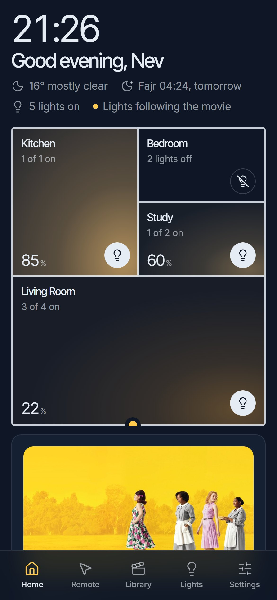
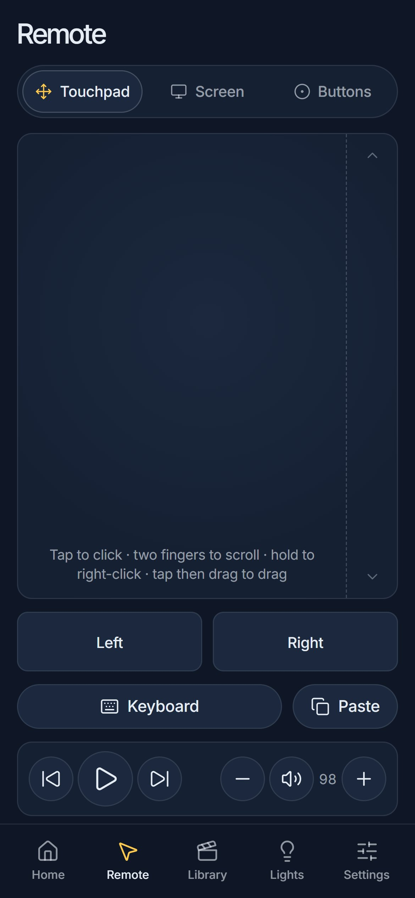
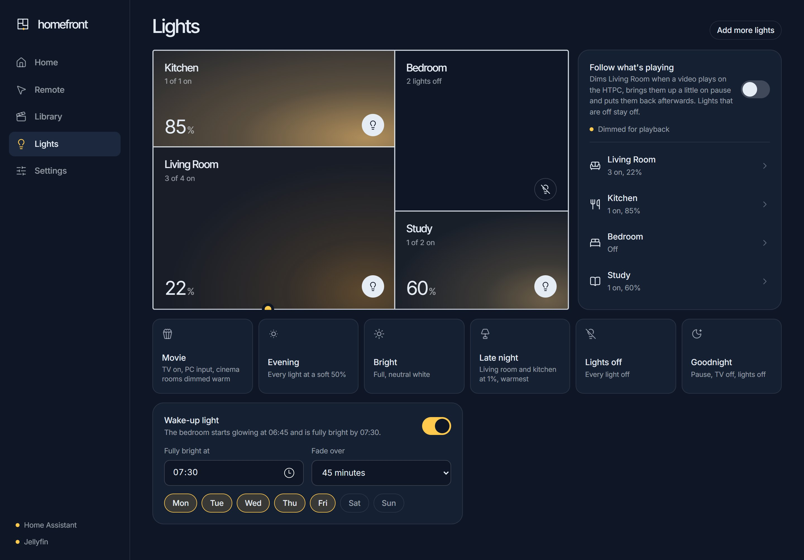
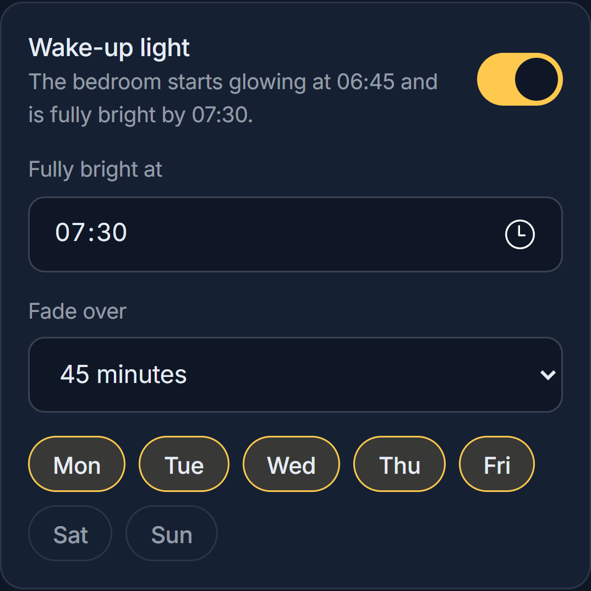

Edition October 2026
homefront
The Handbook
Lights, the TV, the library, the PC, the camera and the phone in your pocket, from one place. How to live with it, set it up and keep it running.
homefront runs on the Windows PC behind the TV. Home Assistant handles the devices and the timing underneath it, Jellyfin holds the library, and Tailscale makes all of it reachable from anywhere without opening anything to the internet. Every part is free software.
Living with homefront
homefront opens from its icon on your phone's home screen, or at the house's homefront address in any browser. Everything below works the same on a phone, a tablet, a laptop and the TV.

The home screen is the house at a glance.
| Scene | What it does |
|---|---|
| Movie | TV on with the HTPC, the TV room dimmed warm, other rooms off |
| Evening | Every light at a soft 50% |
| Bright | Everything full, neutral white |
| Late night | Living room and kitchen at 1% and the warmest white; everything else off |
| Lights off | Every light off |
| Goodnight | Pauses what's playing, turns the TV off, switches every light off |
On a phone, the remote opens as a touchpad, so you can watch the TV rather than the phone.

| Do this | To |
|---|---|
| Drag one finger | Move the pointer |
| Tap | Click |
| Tap, then drag straight away | Drag (windows, sliders, selecting text) |
| Two fingers, or the strip down the right edge | Scroll |
| Hold, or tap with two fingers | Right-click |
The Screen tab mirrors the TV, for when you can't see it: tap anything on the picture to click it there. The Buttons tab is a classic remote: arrows, OK, Back, Esc, full screen, Close tab, Switch app and Desktop. homefront remembers the tab you used last.
Your films and series. Search, browse, and tap a title for details, seasons and episodes. Play on TV opens the full-screen player on the HTPC and puts the controls on your phone. It remembers where you stopped, plays the next episode on its own, and switches subtitles and audio language from CC. Subtitles come on in your language by default.


Ambient on TV (HTPC card) turns the TV into a quiet clock with the weather, the next prayer time and a small floor plan. Underneath is a row of things to continue watching, or what's new if you're not in the middle of anything.
| On a keyboard | Does |
|---|---|
| ← → | Pick a title |
| Enter | Play it |
| Esc or Backspace | Close the clock |
It also closes from homefront (Close ambient on the HTPC card) or the Close the clock script on your phone or watch.
| When | What happens |
|---|---|
| 20 minutes before sunset, TV on, living room dark | The living room climbs slowly to a warm 60%. If you were already watching, it carries on through pauses and new episodes; if a film starts from scratch, follow-what's-playing takes over. Touch the lights and it stops. |
| You come home after dark | The living room comes on. |
| Driving home after dark (CarPlay), about 1 km out | Living room and kitchen on, TV on showing the clock. |
| You leave with lights on | Your phone asks: Turn everything off or Leave them on. |
| Ten minutes after everyone has left | Goodnight, unless you tapped Leave them on. |
| Your wake-up time | The bedroom has faded up to daylight. |
| Motion on the camera | A phone alert with a snapshot (while you're out, always; at home, outside quiet hours) and a notice on the TV. |
| Something new arrives in the library | A phone alert. |
Quiet hours are 23:00 to 07:00: routine alerts wait until morning; motion while nobody's home always comes through.
All of these use the Home Assistant app and the scripts it shows (Movie time, Evening lights, Late night lights, Goodnight, Morning lights, Pause the TV, Clock on the TV, Close the clock, sleep timers).
Lock screen. Long-press the lock screen → Customise → Lock Screen → add a widget → Home Assistant → choose scripts.
Control Centre (iOS 18 and later). Open Control Centre → + → Add a Control → Home Assistant → Script.
Apple Watch. Home Assistant app → Settings → Companion App → Apple Watch → add scripts. They appear in the watch app and as complications.
Siri. Shortcuts → + → Home Assistant → Run Script → pick one, and name the shortcut what you'll say ("Movie time"). If the script list is empty, use Perform Action and type its name instead, for example script.homefront_movie.
Lights when your alarm stops. Shortcuts → Automation → + → Alarm → Is Stopped → Run Immediately → Run Script → Morning lights.
CarPlay. Home Assistant app → Settings → Companion App → CarPlay to put scripts on the car's screen. Then two Shortcuts automations tell the house when you come and go:
| Shortcuts automation | Action |
|---|---|
| CarPlay → Connects → Run Immediately | Home Assistant → Run Script → Car connected |
| CarPlay → Disconnects → Run Immediately | Home Assistant → Run Script → Car disconnected |
Settings → Guest passes → name and how long → show the QR code. Guests get lights, the TV and media, never settings or power. Switch a pass off and it stops working at once.
homefront and the Home Assistant app work the same anywhere. Tailscale on your phone switches itself on when they need it; see Remote access.
Setting up a home
A full home takes about a day, plus half an hour of the household's time for the steps only they can do (approving sign-ins, scanning QR codes, installing apps on their phones). Do the steps in order; each one leans on the one before.
| Item | Required | Notes |
|---|---|---|
| HTPC: Windows 10/11 Pro, 4 cores, 8 GB RAM, wired Ethernet | Yes | Pro for Hyper-V. Intel graphics give Jellyfin hardware transcoding (Quick Sync). It stays on and logged in. |
| TV on the HTPC's HDMI | Yes | LG webOS gets power, input, volume and on-screen notices. Other TVs get everything except TV control. |
| Router with DHCP reservations | Yes | Fixed addresses for the HTPC, Home Assistant, the TV and cameras. |
| Smart bulbs | Optional | Anything Home Assistant supports. Tuya / Smart Life brands link from inside homefront. |
| Camera | Optional | ONVIF-capable. |
| Phone with the Home Assistant app | Recommended | Alerts, presence, widgets, watch, CarPlay. |
Write down the TV model, router, bulbs and the app they use, cameras, the HTPC's specs and where the media lives. Note anything already installed so nothing gets removed by accident.
winget install Microsoft.OpenSSH.Preview.Reserve fixed addresses for the HTPC, the Home Assistant virtual machine (by its MAC address, once it exists), the TV and each camera.
winget install Jellyfin.Server. It installs as a Windows service.If the service won't start after pointing it at a new drive, give the NETWORK SERVICE account read access to the media folders.
| Integration | For |
|---|---|
| LG webOS TV | TV state, volume, inputs |
| Tuya (via the Smart Life app's QR code) or the bulbs' own integration | Lights |
| ONVIF | Cameras (needs an ONVIF account set in the camera's own app) |
| The router's integration (e.g. Huawei LTE) | Presence from the Wi-Fi |
| Mobile app (automatic when the phone app signs in) | Alerts, GPS presence, widgets |
cd server then dotnet publish -c Release -o ..\publish.publish folder to the HTPC, e.g. C:\Users\<you>\homefront.homefront.exe once to create data\config.json; fill in the Home Assistant URL and token, the Jellyfin URL, API key and user id, and the location.homefront.exe in the Startup folder (shell:startup). It must run in the signed-in desktop session, not as a service, because that's where the screen, audio and media sessions are.Create the Home Assistant scripts, helpers and automations in Automations, and expose the scripts to Assist (Settings → Voice assistants → Expose) so Siri, the watch and CarPlay can use them.
On the HTPC:
tailscale serve --bg 80 # homefront over HTTPS on the tailnet
tailscale set --advertise-routes=<home subnet>/24 # the home network, approved once in the admin console
netsh interface portproxy add v4tov4 listenport=8123 connectaddress=<home assistant ip> connectport=80
# then a firewall rule for TCP 8123 that only accepts 100.64.0.0/10 (the tailnet)
Set Home Assistant's internal URL to its home address and its external URL to http://<htpc>.<tailnet>.ts.net:8123.
https://<htpc>.<tailnet>.ts.net and add it to the home screen.node tools/audit.mjs (134 page states, 9 screen sizes).Replace every default password, walk the household through the User guide, and write down what was installed and where.
How the house thinks
homefront and Home Assistant split the work: Home Assistant owns the devices, timing and alerts, so they keep running if homefront stops; homefront owns everything only the HTPC can see (what's playing, the screen, the keyboard and mouse) and the dashboard.
| Direction | Name | Purpose |
|---|---|---|
| Home Assistant → homefront | event homefront_command |
Ask homefront to do something (table below) |
| homefront → Home Assistant | binary_sensor.homefront_playing |
Something is playing; attributes title, app, video |
| homefront → Home Assistant | sensor.homefront_htpc_cpu, _memory, _disk_<drive>_free |
HTPC health |
| homefront → Home Assistant | sensor.homefront_sleep_timer |
Minutes left |
| homefront → Home Assistant | sensor.homefront_heartbeat |
Updated every minute; an alert fires when it goes stale |
| homefront → Home Assistant | event homefront_new_media |
New films and episodes, batched per show |
homefront_commandcommand |
Extra data | Does |
|---|---|---|
scene |
scene: movie, evening, bright, latenight, off, goodnight |
Runs a scene |
sleep_timer |
minutes (none cancels) |
Starts or cancels the sleep timer |
ambient |
Opens the TV clock | |
close_kiosk |
Closes the TV clock or player | |
open |
url (or app:spotify etc.) |
Opens something on the TV |
pause / play |
Pauses or resumes whatever is playing | |
tv_on |
Wakes the TV, retrying until it answers | |
welcome |
TV on, HTPC input, clock showing, unless something is already on screen | |
cinema_resume |
Follow-what's-playing takes over after the sunset fade hands over |
Example script:
alias: Movie time
sequence:
- event: homefront_command
event_data: { command: scene, scene: movie }
These are what the phone, the watch, CarPlay, Siri and Assist see.
| Script | Does |
|---|---|
| Movie time | Scene: Movie |
| Evening lights / Bright lights / All lights off | Scenes |
| Late night lights | Scene: Late night |
| Goodnight | Scene: Goodnight |
| Morning lights | Bedroom to full daylight |
| Sleep timer 30 minutes / 1 hour | Sleep timer |
| Clock on the TV / Close the clock | The TV clock |
| Pause the TV | Pause |
| Car connected / Car disconnected | Run by the phone's CarPlay automations |
| Lights-left-on nudge | The actionable "lights are still on" notification |
| Helper | Used by |
|---|---|
| Wake-up light (on/off), Wake-up time, Wake-up days, Wake-up fade minutes | The wake-up light; edited on homefront's Lights page |
| Keep lights on while away | Set by Leave them on; cleared when you get home |
| Driving | Set by the car scripts |
| Sunset fading | On while the sunset fade runs; homefront leaves the lights alone meanwhile |
| Quiet hours (schedule, 23:00–07:00) | Holds back routine alerts |
| Almost home (zone, 1 km, passive) | The driving-home welcome |
| Automation | Trigger | Does |
|---|---|---|
| Sunset: fade the living room on | 20 min before sunset, TV on, living room dark | 30 one-minute steps from 5% to a warm 60%. If a video was being watched when it started, it runs to the end through pauses and new episodes; if nothing was and a video starts, it stops and sends cinema_resume. Any manual change stops it. |
| TV on after dark | TV switches on after sunset | Living room on |
| Arriving home after dark | You arrive, after sunset, living room dark | Living room to 60% warm |
| Wake-up light | The fade-start time on a chosen day | Bedroom ramps warm-to-daylight, one step a minute |
| Everyone left: Goodnight | Away for 10 minutes | Goodnight, unless Leave them on |
| Nudge: lights left on | Away for 3 minutes with lights on (and not already asked by the car) | The lights-left-on notification |
| Nudge: handle the reply | A button on that notification | Turn everything off runs Goodnight; Leave them on sets the helper |
| Back home: clear "keep lights on" | You arrive | Clears the helper |
| Driving home: lights on and the TV clock | Driving, about 1 km out, after dark, out for 10+ minutes | Living room and kitchen on, welcome |
| TV: switch on through the HTPC | Anything asks Home Assistant to turn the TV on | tv_on (Home Assistant's LG integration can't wake the TV by itself) |
| Alert: new on Jellyfin | homefront_new_media |
Phone alert |
| Alert: a light isn't responding | A bulb unavailable for 10 minutes | Phone alert |
| Alert: homefront stopped responding | Heartbeat stale for 5 minutes | Phone alert |
| Alert: camera motion | Motion on the camera | Phone alert with a snapshot; away always, home outside quiet hours |
Follow what's playing (Lights page) dims the cinema rooms while a video plays and lifts them a little when paused. It saves the lights the moment playback starts and restores them when it stops. It never brightens: each light goes to whichever is lower, its own level or the cinema level. A change you make during playback becomes the new state to restore. While the sunset fade runs, it stays out of the way.
What counts as video: homefront's own player; browser tabs from video sites (a tab that reports an album, such as YouTube Music or Spotify Web, is music); and IPTVnator, VLC, Jellyfin, Plex, Kodi, Stremio, mpv, MPC, PotPlayer and the Windows media players. Music apps, games and calls never touch the lights.
Sleep timer: one minute before the end, a notice on the TV; at the end, Goodnight.
TV notices (LG only): motion, the sleep-timer warning and, if switched on, prayer times. They're text only: the TV doesn't answer notices that carry a picture.
Reaching home from anywhere
Nothing in the house is reachable from the internet. At home, phones talk to the HTPC over Wi-Fi; away, they go through Tailscale, a private network that the phone switches on only when it's needed.
| What | At home | Away |
|---|---|---|
| homefront | https://<htpc>.<tailnet>.ts.net (or http://<htpc>) |
https://<htpc>.<tailnet>.ts.net |
| Home Assistant app | Internal URL, used on the home Wi-Fi | External URL http://<htpc>.<tailnet>.ts.net:8123 |
| Jellyfin | http://<htpc>:8096 |
http://<htpc>.<tailnet>.ts.net:8096 |
tailscale serve --bg 80 gives homefront a real HTTPS certificate, which lets phones install it as an app and paste from the clipboard.tailscale set --advertise-routes=<home subnet>/24, approved once in the admin console, makes home addresses work while Tailscale is on.Alerts never need the VPN: they arrive through Apple's or Google's push service. Home and away come from the router seeing the phone on the Wi-Fi as well as GPS.
If you'd rather Tailscale only came on while driving, add Tailscale → Connect to the start of the CarPlay connects automation and Tailscale → Disconnect (after a 30-second wait) to the end of CarPlay disconnects.
Each home gets its own tailnet, owned by the household that lives there. Access between homes uses Tailscale machine sharing: the owner of a home shares just its HTPC with a named person (admin console → the machine → Share), and it appears in that person's tailnet beside their own devices.
| Who | Gets |
|---|---|
| The household | Their own home, through their own tailnet. Family members without Tailscale use homefront logins or guest passes at home. |
| Family elsewhere (e.g. you reaching your parents' home) | That home's HTPC, shared to them. Never the rest of the network behind it. |
| Whoever supports the install | Each home's HTPC, shared by its owner and revocable by them at any time. |
One connection reaches every home shared with you; nothing is shared back the other way. Sharing covers the HTPC itself, not the network behind it, which is enough because homefront and Home Assistant are both reached through the HTPC. A tailnet on the free plan holds three people; bigger households need Tailscale's paid personal plan.
If you're away on a network that uses the same address range as home (192.168.8.x is the default on many routers), home addresses point at that network instead. The Tailscale names keep working.
When something's off
Support works remotely over Tailscale and SSH; most fixes take a few minutes and no visit.
| Symptom | Likely cause | Fix |
|---|---|---|
| homefront won't load | homefront isn't running in the desktop session | Sign in to the HTPC; start homefront.exe from the Startup shortcut. Check data\homefront.log. |
| "Reconnecting" banner | HTPC asleep, or the network dropped | Wake the HTPC; check its network cable. |
| Lights or TV don't respond | Home Assistant can't be reached, or the device is offline | Look at the status dots in homefront's side rail; check the device in Home Assistant. A Tuya bulb switched off at the wall shows as unavailable. |
| TV won't switch on | Deep standby: the TV's network is asleep | On the TV, turn on Quick Start+ and Turn on via Wi-Fi. homefront retries for 25 seconds; if it still fails, the log says TV didn't wake up. |
| TV clock or player opens behind other windows | Windows blocked it from taking focus | Fixed in current builds (homefront keeps bringing it forward); update homefront. |
| Lights jump while watching | Two things changing the same lights | Check which automation changed them (Home Assistant → Logbook). Follow-what's-playing only dims and stands aside during the sunset fade. |
| Now playing is wrong or empty | The app doesn't report to Windows and isn't making sound | /api/pc/audio (from the HTPC) lists which apps are making sound. |
| No phone alerts | Notifications off, quiet hours, or a push hiccup | iPhone Settings → Notifications → Home Assistant; check the automation's trace in Home Assistant. A one-off push failure appears in Home Assistant's log as Error sending notification. |
| Scripts missing in Shortcuts, widgets or the watch | The Home Assistant app's local list is out of date | Open the app and let it load, close it fully, reopen Shortcuts; or Settings → Companion App → Debugging and reset its cache. Meanwhile use Perform Action with the script's name. |
| Tailscale keeps switching on at home | The Home Assistant app doesn't know the home Wi-Fi | Add the Wi-Fi's name under the app's Internal URL. Opening homefront from its icon also uses Tailscale, by design. |
| Can't reach the house when away | Tailscale off, or On Demand misconfigured | On Demand set to Do nothing; the subnet route approved in the admin console. |
| Paste does nothing | The page isn't on HTTPS | Open homefront from the Tailscale address; on the plain address, use the paste field that appears. |
data\homefront.log next to homefront.exe.node tools/audit.mjs against a test copy on port 8090. Test copies must run with automations off (cinema.enabled, prayer and camera notices false) so they can't touch the real lights.